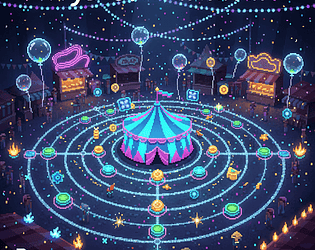
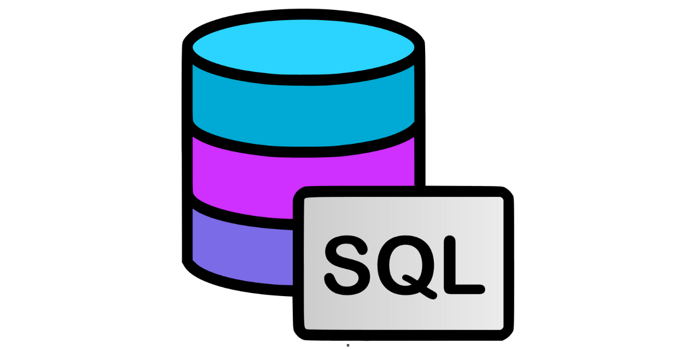

Projet personnel
Jeux
Python
Tkinter
Mini jeux : Snake
Dans le cadre des journées portes ouvertes de mon lycée, j’ai réalisé un jeu durant les vacances de février afin de le présenter au public. J’ai choisi de développer une version du jeu Snake, un classique des jeux d’arcade, en raison de sa simplicité apparente et de son intérêt pédagogique.
Ce projet m’a permis de découvrir les bases du développement de jeux, notamment la gestion des déplacements, des collisions, ainsi que la mise en place d’une boucle de jeu. Il a également constitué une première expérience concrète de conception complète, de l’idée initiale à la présentation finale.
Cette réalisation représente une étape importante dans mon parcours, marquant mes débuts dans le développement et mon intérêt pour la création de jeux vidéo.

Projet scolaire
Jeux
Initiation au développement de jeux 2D
C++
Code::Blocks
Mini jeux vidéo C++
Lors de ma première année de BUT, j’ai développé un jeu 2D en C++ sur l’environnement Code::Blocks.
Ce projet m’a permis d’acquérir les bases du développement de jeux vidéo, notamment la gestion des assets, la programmation orientée objet avec la création de classes (personnages, ennemis), ainsi que l’implémentation des déplacements et des interactions.
J’ai également travaillé sur la structuration du code, la gestion des événements et la logique de jeu, ce qui m’a permis de mieux comprendre l’architecture globale d’un projet en C++ et les contraintes liées au développement d’un jeu en 2D.

Compétition / évènement
Jeux
Développement de jeux 2D
Découverte du moteur de jeux GODOT
GDScript
Code Game Jam
En janvier 2026, j’ai participé à ma première Game Jam, au cours de laquelle j’ai collaboré avec une équipe de cinq autres étudiants pour concevoir un jeu 2D sur le thème du clic.
Après 30 heures de développement intensif, nous avons réussi à finaliser le projet et à obtenir la 2ᵉ place au sein de notre IUT.
Cette expérience m’a permis de découvrir concrètement les moteurs de jeux vidéo, le travail en équipe sous contrainte de temps, ainsi que les différentes étapes de création d’un jeu. Elle m’a également motivé à poursuivre dans ce domaine, en lançant un projet personnel de jeu vidéo sur lequel je continue de travailler.

Projet scolaire
Base de données
Gestion de données
SQL
MySQL
Création et Gestion de base de données
Dans le cadre de mon cursus à l’IUT, j’ai développé une base de données complète intégrée à un environnement applicatif autour d’un site de notation de films et de séries, nommé TVDB.
Ce projet m’a permis de travailler la modélisation de données et la structuration de bases relationnelles, ainsi que de renforcer mes compétences en SQL.
Afin d’optimiser la collecte de données, j’ai conçu un script d’automatisation en Python utilisant des API externes. Cette approche m’a permis de récupérer efficacement de grandes quantités de données, tout en découvrant concrètement l’intégration d’API dans un projet réel.